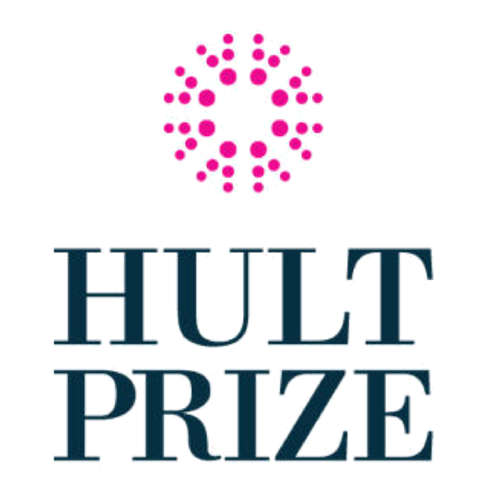

Work experience
Customer Service Representative
Transcosmos Inc.
(Ryanair Division)
(Ryanair Division)
Oct 2017 - Apr 2018
Debrecen, Hungary
As an English speaking customer service representative for one of the leading airlines in Europe, I gained valuable experience in working proactively, communicating quickly and efficiently, and handling client complaints professionally. I had a customer satisfaction score of 95%+. My duties included:
- Handling contacts via various channels such as phone, chat, e-mail
- Processing flight reservations
- Efficiently answering customer queries and resolving customer complaints
- Organising special needs assistance for passengers with reduced mobility
- Processing other administrative tasks related to flight reservations
Education
Bachelor in Business and Economics
Vienna University of Economics and Business
2019 - 2022 (expected)
Vienna, Austria
I am currently studying in the English-taught BSc programme "Business and Economics" at the Vienna University of Economics and Business (Wirtschaftsuniversität Wien). I am particularly interested in Finance, Statistics, Forecasting and Data Science. Courses taken so far:
- Business and Society
- Contemporary challenges in Business and Economics
- Governance and legal environment
- Quantitative methods I.
- Quantitative methods II.
- Understanding Business
- Law, Economics and Business
- Foundations in Microeconomics
- Foundations in Socioeconomics
Bachelor in International Business
Corvinus University of Budapest
2016 - 2017 (discontinued)
Budapest, Hungary
I was a student in the Hungarian-taught BA programme "International Business" at the Corvinus University of Budapest for one semester before discontinuing studies there due to personal reasons. Courses taken:
- Environmental Economics
- Mathematics
- Economical History
- Informatics
- Microeconomics
- Business Economics
Secondary Education
Kossuth Lajos Secondary Grammar School of the University of Debrecen
2010 - 2016
Debrecen, Hungary
I graduated from one of the best grammar schools in Hungary with a matura point score of 476/500.
Skills
Web development and design
9 years of experience in using the LAMP stack to develop web applications and tools mainly for personal usage. Advanced knowledge of CSS, Javascript and jQuery.
GIS
Intermediate knowledge in observing, editing, and analysing geospatial data with the use of tools such as QGIS and R.
R programming
Intermediate knowledge in statistical programming and data visualisation.
Domain names
4 years of experience in domain name investing.
Communication
High-level verbal and written communication skills.
Languages
English
Full Professional Proficiency as a result of residing in the United Kingdom for 5 years as a child.
Hungarian
Native language
German
Elementary Proficiency
Achievements & Certificates
Cambridge Advanced English C2 Proficiency Certification
from Cambridge Assessment English
Hult Prize 2020 Regional Summit Competitor
Developed a prototype for an eco-conscious travel search application (Team GenAIRation)